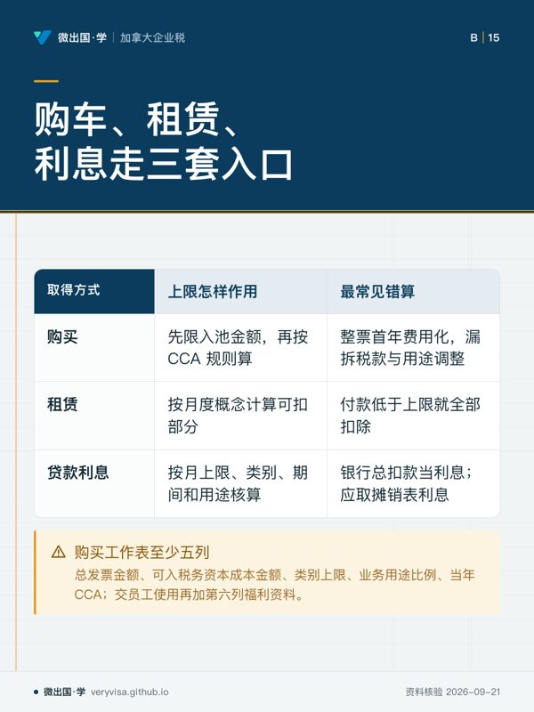
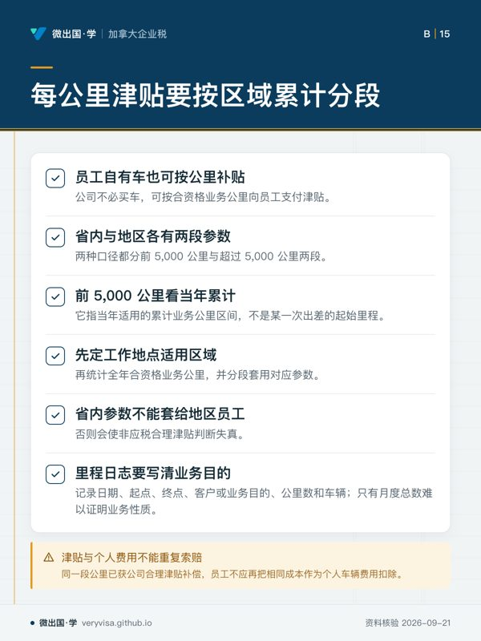
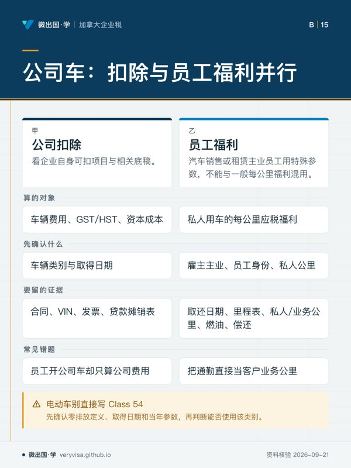

核实日期：2026-09-10｜本页口径：2026 税年公司车辆、CCA、租赁、利息与雇员用车。金额和每公里参数均为 2026 快照；下一次复核：2027-01-31。车辆税务不能只看发票总额，必须同时看车辆类别、取得方式、用途比例、使用者和当年参数。
公司买车或付车费，表面上只有一张发票，税法却会拆成资本成本、CCA、租赁费用、利息、运行费用和员工福利。第一步若把“公司名下”误当成“全部可扣”，后面的每一步都会错。正确路线是先确定车辆是否为 passenger vehicle、是否属于零排放类别、是购买还是租赁，再建立 business use 与 personal use 的里程证据，最后分别处理公司扣除和员工福利。
一、车辆名称不是税务类别
这一条指向 ITR s.7307 的法定参数及汇编版本边界。它提醒读者：车辆的商业名称、销售人员说的“商用 SUV”或发票上的车型名称，都不能取代税法分类。要先核对乘用车定义、座位和用途、是否主要用于出租或运输，以及车辆取得日期和适用的法规版本。
公司要在底稿保存 VIN、发票、交付日期、融资或租赁合同、车辆类型、是否零排放、里程表和使用政策。车辆类别决定哪些上限可用，取得日期决定哪个税年参数适用；同一家公司在 2025 年买的车与 2026 年买的车，不能因为车型相同就机械套同一个资本成本上限。
⚠️
“100% 公司付款”不等于“100% 业务用途”
付款主体只说明现金由公司出，不说明员工有没有周末、通勤或家庭使用。业务用途要由里程日志、行程目的、客户地点和公司政策支持；私人用途仍可能形成员工应税福利。
二、购买车辆：资本成本上限先于 CCA
对一般乘用车，CCA 不是把整张发票在第一年费用化。本站核实 2026 税年 Class 10.1 乘用车的税前资本成本上限；这项上限先限制进入资本成本池的金额，之后才按适用 CCA 类别和年度规则计算。GST/HST、补贴、以旧换新和私人用途调整也要分开核对。
零排放乘用车不能简单当作普通乘用车。本站核实 Class 54 的 2026 税前年资本成本上限；使用 Class 54 前要确认车辆确实符合零排放定义和取得时的条件。不能因为车辆是混合动力、车主称其“环保”或广告写着 electric-ready，就自动使用零排放类别。
一个可靠的购买工作表至少包含五列：总发票金额、可进入税务资本成本的金额、适用类别的上限、公司业务用途比例以及当年可申请的 CCA。若公司把车辆交给员工使用，还要加第六列，记录个人使用产生的 standby charge 与 operating benefit 资料。会计折旧、税务 CCA 和员工福利是三条不同的计算线。
案例：公司 2026 年购入一辆既用于拜访客户、又由经理周末使用的 SUV。不能直接把全部车价做 CCA，也不能只因为经理负责支付油费就认定没有福利。应先分类车辆，按 2026 上限确定资本成本，再用里程日志分离业务和私人用途；公司扣除与经理福利分别计算，最后才在总账和 T4 资料中汇总。
三、租赁车辆：月度上限是另一套入口
公司租车时没有购买车辆的资本成本池，不能把租金直接照抄成购买车辆的 CCA。本站核实 2026 税年乘用车租赁月度税前上限。租约期、首期款、押金、制造商返利、税款和租赁合同中的资本化金额，可能影响租赁扣除的计算；应依当年官方公式将可扣部分与私人用途分开。
租赁上限按月度概念运作，不表示每月付款低于上限就全部可扣。短期租赁、跨税年、提前终止或换车，都会改变期间与调整项。底稿应保存每月发票、租约、起止日期、车辆类别和用途比例；年末不能只用银行流水重建，因为流水看不出税务上哪一部分是租金、哪一部分是押金或其他费用。
租赁与购买的比较也不能只看现金流。购买关注资本成本上限和 CCA；租赁关注月度上限及合同调整；两者都要处理业务用途和员工私人使用。公司若在年中从租赁转购买，还应分别封存两段资料，不要把同一辆车整个年度当成一种取得方式。
四、车辆贷款利息：每月上限独立判断
本站核实乘用车贷款利息的 2026 年月度上限。贷款利息不是 CCA，也不是租赁付款。即使本金没有超过车辆资本成本上限，利息仍须单独按月度上限、车辆类别、贷款期间和业务用途核算。融资合同中的本金、利息、保险、服务费和提前还款费要分拆。
实际步骤是：先取贷款摊销表的利息部分，确认对应月份和车辆；再乘以可支持的业务用途比例；最后应用适用月度上限。没有摊销表而只拿银行扣款总额，会把本金误作利息。若车辆由员工使用，员工福利的计算也不等于公司可扣利息金额，不能用福利数字反推利息扣除。
五、员工自有车与公司补贴：每公里参数要按区域
公司不一定买车，也可能让员工使用自有车辆并按公里补贴。本站分别核实 2026 年省内前 5,000 公里与超过 5,000 公里的每公里业务津贴参数；这几条是地区口径对应的两段参数。这里的“前 5,000 公里”是当年适用的累计业务公里区间，不是某一次出差的前 5,000 公里。
公司应先确定员工工作地点适用的省份或地区，再统计全年合资格业务公里，分段应用参数。把省内参数套给地区员工，或把员工当年已经在另一雇主处使用的公里区间完全忽略，都会使非应税合理津贴判断失真。里程日志要写日期、起点、终点、客户或业务目的、公里数和车辆；只有月度总数而无目的，审计时很难证明业务性质。
合理的每公里津贴与实际费用报销也不能重复索赔。同一段公里若已经由公司按合理津贴补偿，员工不应再把相同成本作为个人车辆费用扣除；公司应在政策中写清楚采用津贴、实际报销或混合方式的边界。
六、员工使用公司车：福利和公司扣除平行运行
本站核实雇主支付私人用车费用时的一般每公里应税福利参数；这一条则记录汽车销售或租赁主业员工私人用车的特殊参数。两者不能因为都叫“每公里福利”就混用。先确认雇主的主业是否属于汽车销售或租赁，再确认车辆、员工身份、私人公里和公司支付的运行费用。
公司需要留存员工取车和归还日期、里程表读数、私人公里、业务公里、是否提供燃油、员工是否偿还部分费用，以及雇主行业资料。通勤通常不能直接当成客户业务公里；周末使用、家庭成员使用和休假期间使用也应按公司政策记录。福利计算完成后，仍要检查公司端车辆费用、GST/HST 和资本成本的对应记录。
🔧
车辆底稿的最小证据包
购车或租赁合同、VIN 与类别判断、月度里程表、业务行程日志、贷款摊销或租赁发票、公司车辆政策、员工偿还记录、福利计算表和 T4 工作底稿应能互相对上。缺一项不一定立即否定扣除，但会让用途、类别或参数无法复核。
七、三个常见错题
第一，看到公司买的是电动车，就立即写 Class 54。正确答案是先确认零排放定义、取得日期和 2026 参数，不能以广告用语代替法规分类。第二，看到租车每月付款，就把付款全额扣除。正确答案是先应用租赁月度上限，再处理税款、合同调整和业务用途。第三，看到员工开公司车，就只算公司费用、不算福利。正确答案是公司扣除与员工福利是两条并行计算线。
结账流程
月末先更新里程和发票，季度检查车辆分类及参数年度，年末把 CCA、租赁、利息、津贴、福利和 T4 资料互相核对。所有数字标注“2026 税年、2026-09-10 核实、2027-01-31 复核”，若车辆政策或 CRA 指引变化，应提前触发复核，而不是等报税截止日才发现旧表格仍在使用。
本页知识卡
不看正文也能拿到这一节的核心内容：先看导读，再看图。点图放大，左右翻页。
- 先看阅读顺序：先辨法定归类依据，再看购入时点。
- 易漏业务用途要由里程日志、行程目的、客户地点和公司政策支持。
- 下一步去练习；问持牌专业人士应采用哪项法规口径。

- 先看购入还要拆开 GST/HST、补贴、以旧换新和私人用途调整。
- 易漏零排放车不能凭广告直接选 Class 54；短租、跨税年、提前终止或换车会改期间与调整项。
- 下一步去练习；问持牌专业人士合同应套哪套限额公式。

- 先看先判所在区域，再把合资格公务里程按年度汇总。
- 易漏员工当年在另一雇主处已使用的公里区间，完全忽略也会使判断失真。
- 下一步去练习；问持牌专业人士混合报销如何划边界。

- 先看先看左右两栏各自在核算谁，别用一侧金额推另一侧。
- 易漏周末、家庭成员和休假期间用车，也应按公司政策记录。
- 下一步去练习；问持牌专业人士雇主行业属性如何改变福利参数。